盘头、插花、戴饰，每一步都有讲究
素丝红绳、骨笄引路——准备梳、绳、骨笄等必备工具。针对发量不足者，需预备“米长假发”以保发髻丰盈。
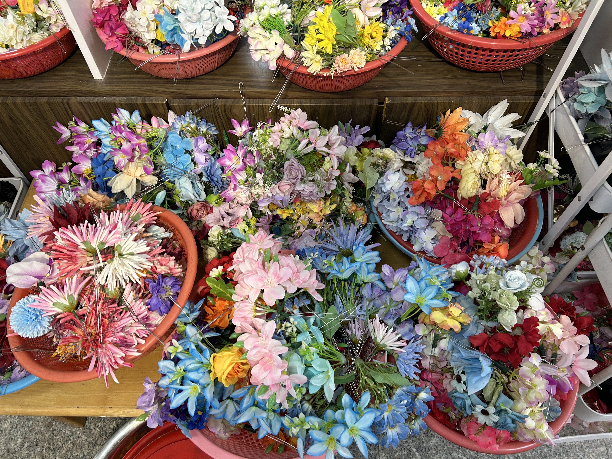
光洁分线、红绳合扎——以耳廓为界划出前后分发线。先束后部马尾，再并入前发，确保额头整齐，为盘发构筑坚实根基。
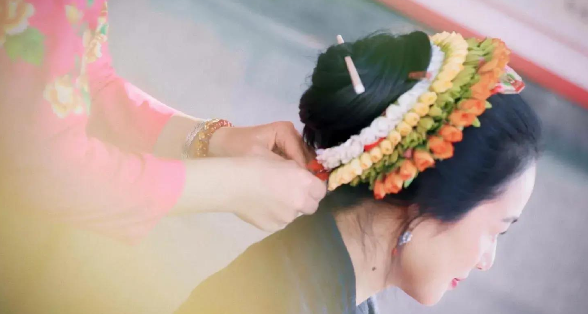
旋绕螺旋、骨笄穿插——将马尾拧成绳状，由里及外绕成“扁平螺旋状”发髻。抽出骨笄横穿圆髻中心，完成结构固定。
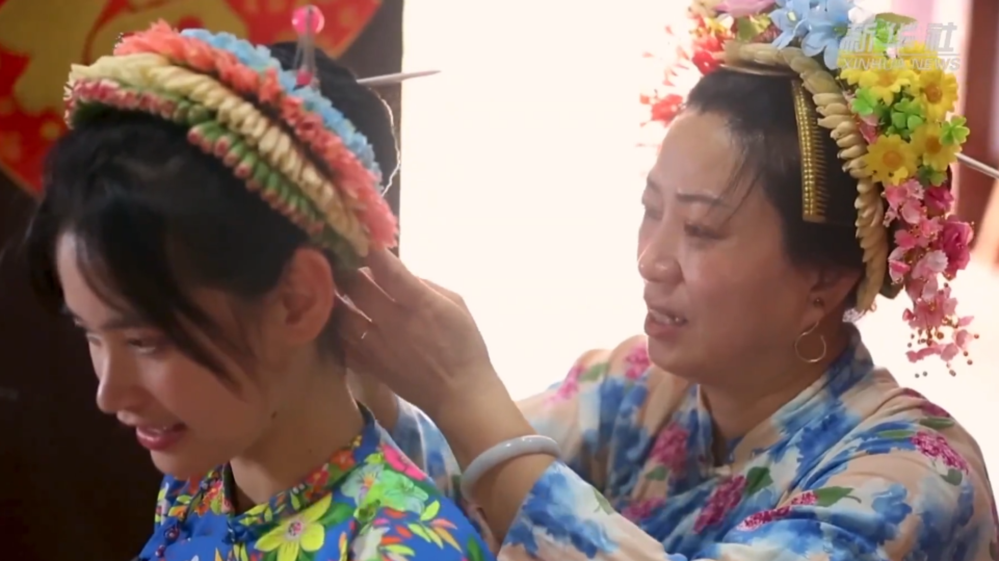
层叠环戴、放射点睛——以发髻为圆心，有序环绕1-5圈鲜花串，随后在间隙处插入明艳边花，形成放射状的视觉层次。
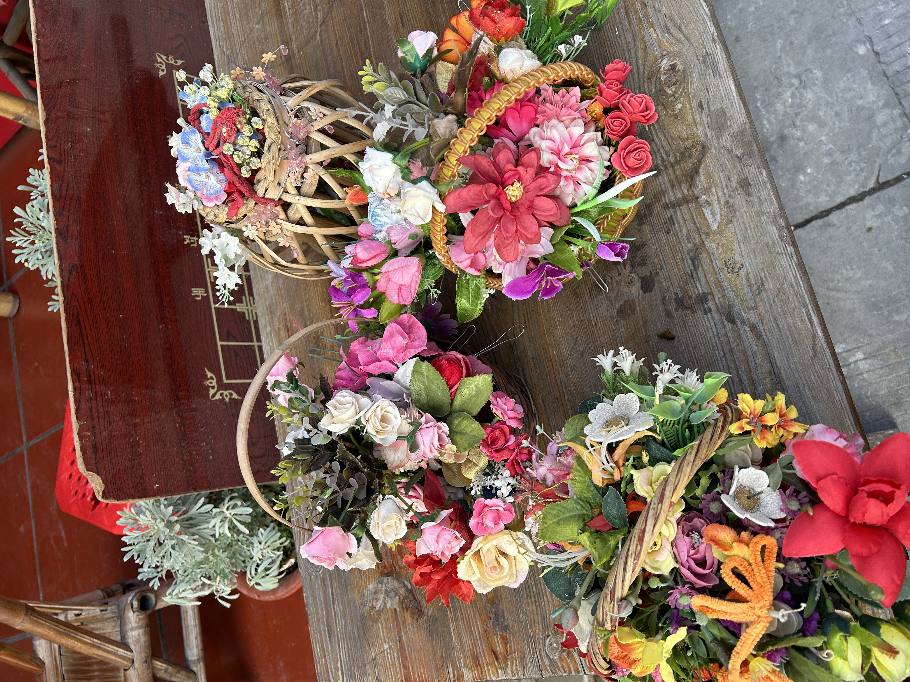
玳瑁压鬓、金饰簪顶——在发髻侧方插戴玳瑁梳，顶部点缀钗仔针、金剑等黄金制品。金花与鲜花交相辉映，尽显华贵。
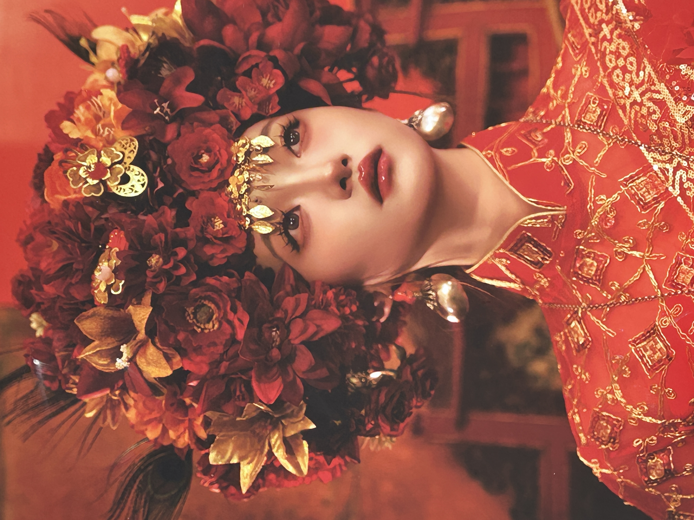
匀称放射、丁香映衬——最终形成紧密匀称、结构和谐的“头顶花园”。搭配传统的丁香耳环与大襟衫，呈现完整的蟳埔女文化图景。
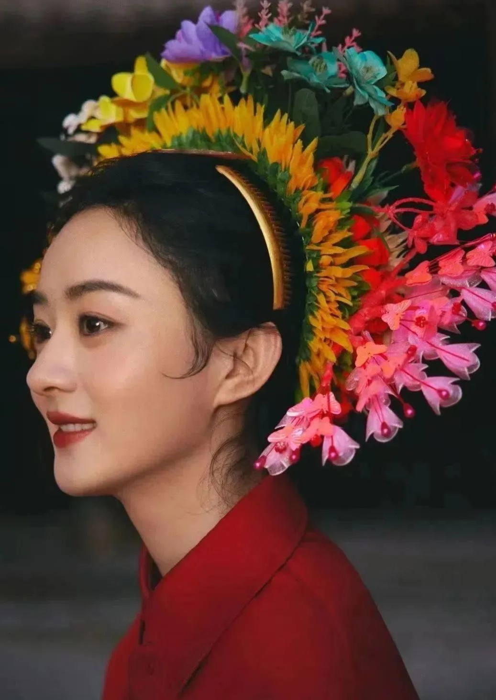
—— 摘自相关非遗研究文献
分发——先将头发梳理顺直，连同刘海全部往后梳，保持额头的光洁整齐，以约耳廓处为分发线起点，用骨 笄将头发分为前后两部分
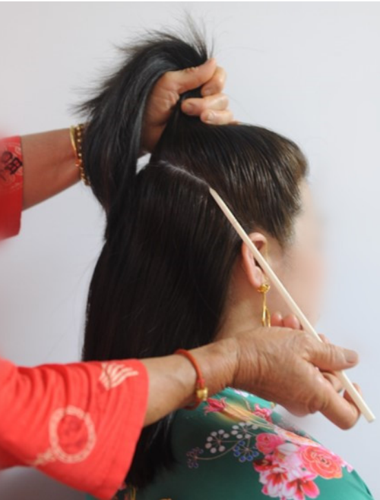
扎马尾——先将后部分头发梳理顺直，用红绳系起半高马尾（红绳需预留一定长度方便合绑前部分头发）；梳理前部分头发，用骨笄支撑固定住前部分头发，再将前部分头发合并至后部分头发，前后两部分头发用预留的红绳合扎成同一个马尾，剩余的红绳自然垂放于头顶中。
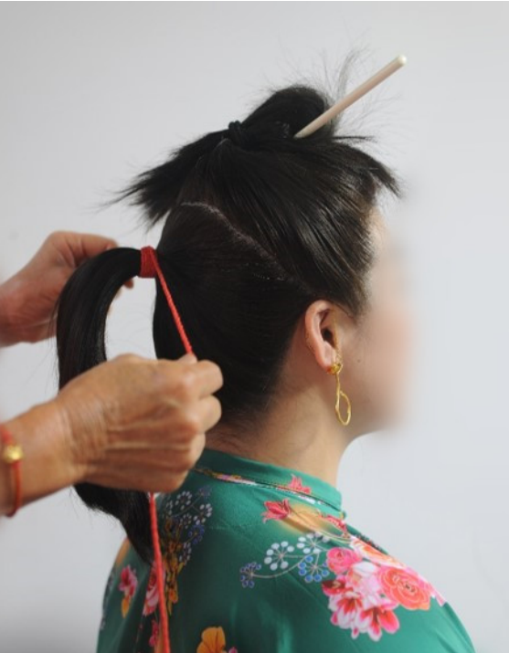
将长马尾辫拧成一股细长绳状，再将绳状马尾一圈一圈螺旋式绕到手上，发圈自 然由大及，接着以马尾根部为中心，将发圈由小及大、由里及外，一圈圈盘按成扁 平螺旋状圆形发髻，紧接着抽出骨笄固定圆髻。剩余马尾发尾一小截头发，与留存的 红绳合拧缠绕、将其固定环绕于马尾根部隐藏。
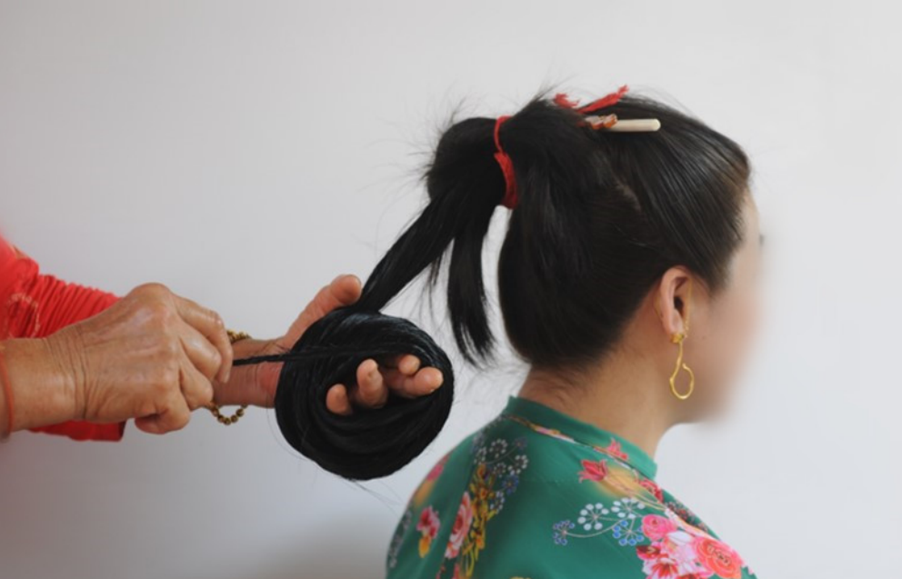
梳簪——骨笄抽出时，前部分头发松散自然形成蓬松的发鬓，用小插梳稍做梳理
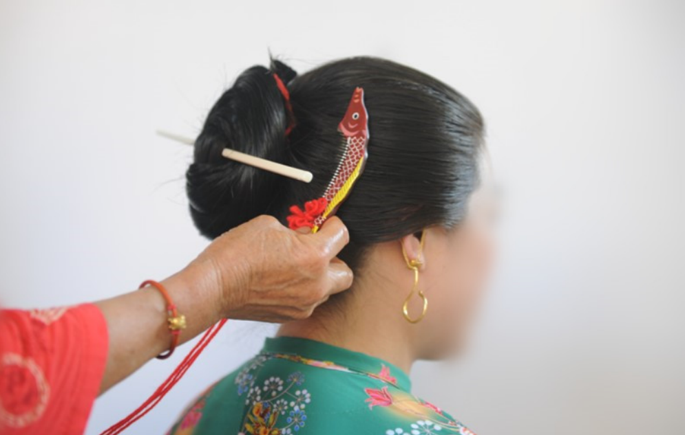
佩戴小插梳——将小插梳尾部红绳缠绕发髻心几周，起到固定、防止掉落的作用，后将小插梳固定在头顶中间位置， 剩余约1/2红绳自然装饰垂落于发髻右上侧
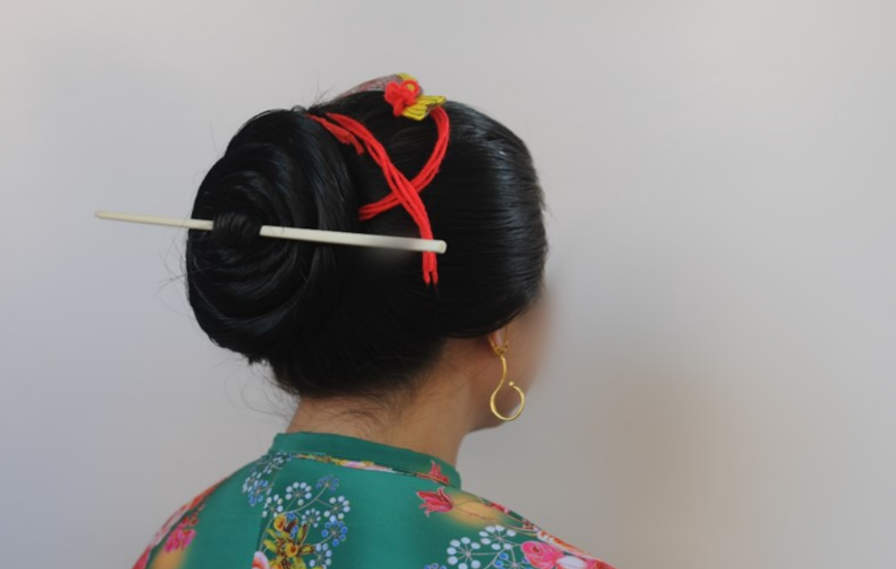
佩戴花串——在发髻周围佩戴花串，少则1串～2串，多则3串～5串，以发髻为圆心，一圈圈有序环戴在发髻上。花串的数量、种类可根据时节、蟳埔当地风俗习惯、个人喜好等进行选择佩戴。 注：蟳埔女日常可不佩戴花串或只佩戴1串～2串花串，而喜庆节日常佩戴多达3串～5串花串
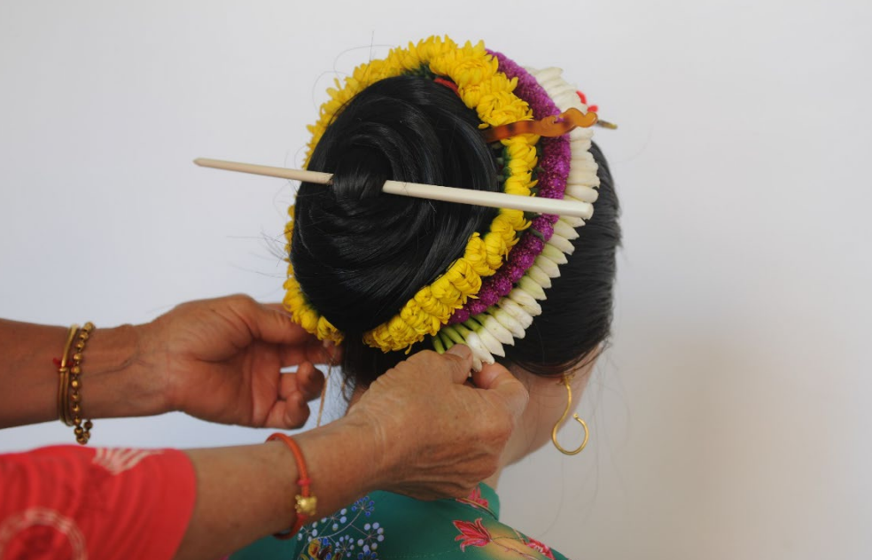
佩戴边花——在花串之间或花串与发髻之间的间隙中，插入边花，以增加头饰的层次感和丰富 度，完成边花佩戴。边花的颜色、形状和数量的选择要与花串相协调，并与花串形成和谐美感。宜选用颜色明艳、形状 各异的边花，以体现整体花饰的多彩、丰富。 注：蟳埔女日常无论是否佩戴花串，均会插戴边花，少则1枝～2枝，多则插戴满花串周围。
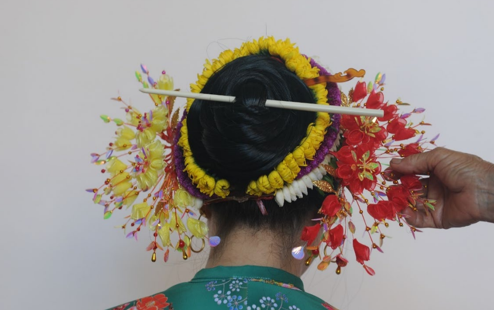
佩戴金饰——玳瑁梳，在发髻前侧面戴上玳瑁梳，玳瑁梳针脚簪插于发髻中心辅助固定，使玳瑁梳与整 体簪花融为一体相得益彰。
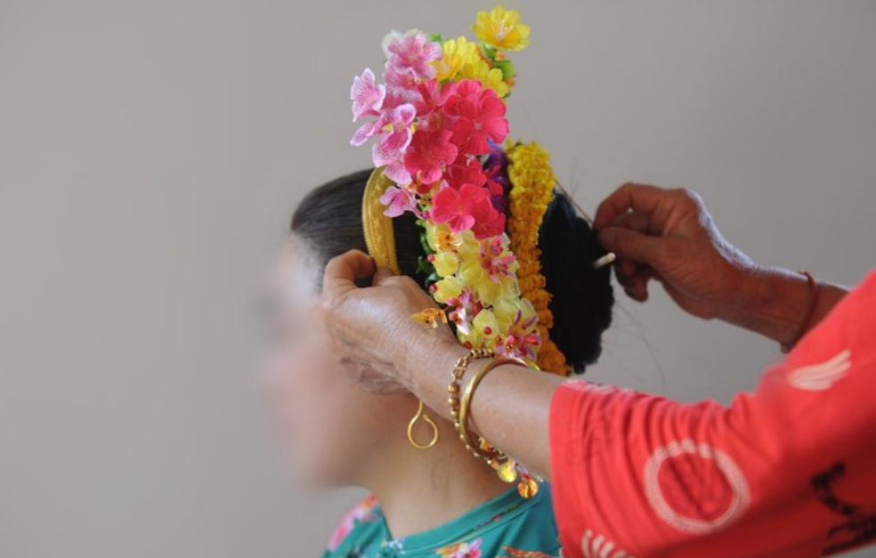